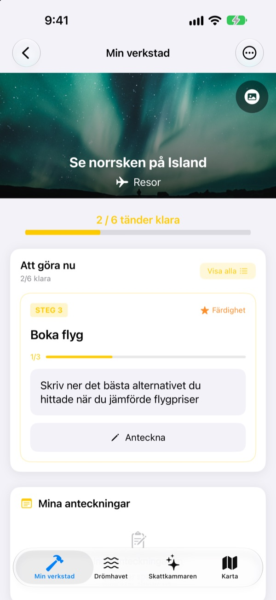
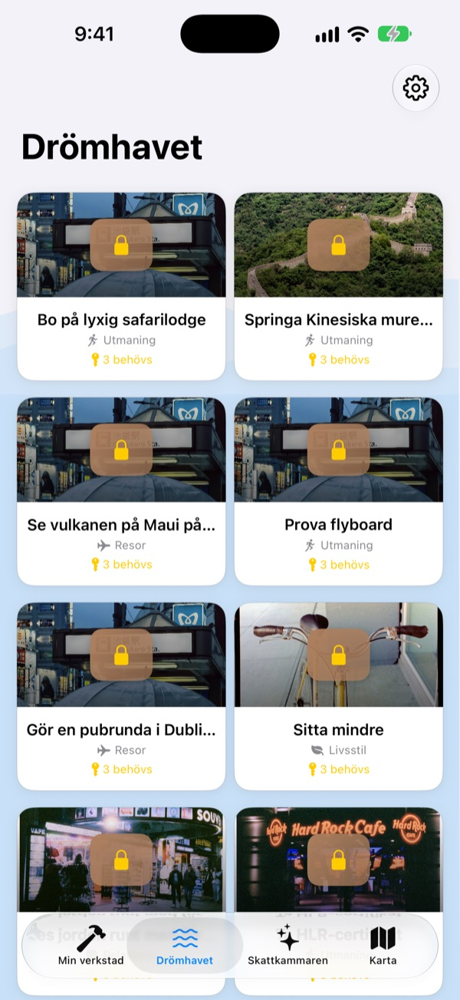
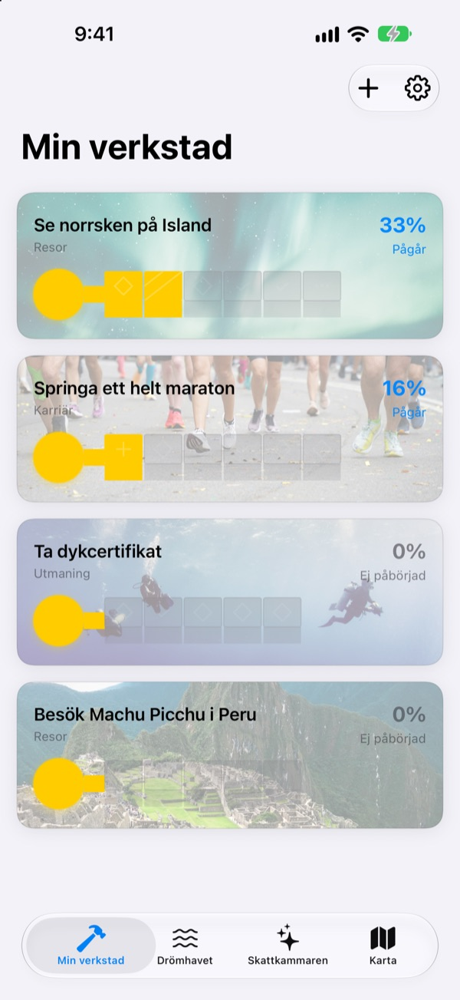
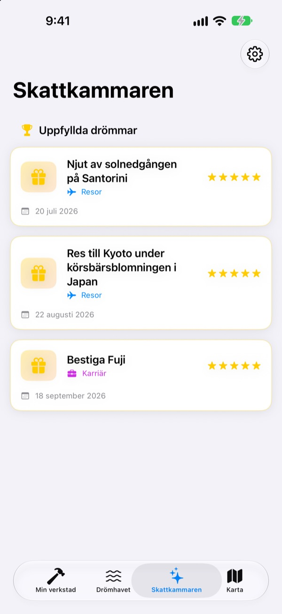

Skriv inte bara
ner din bucketlista
Välj en dröm så blir de små stegen som leder dit tänderna i en nyckel. Svara på dagens steg, en fråga i taget, och innan du vet ordet av är lådan öppen.
Köp en gång så är alla funktioner dina. Ingen prenumeration, ingen reklam.

Gör klart nyckeln
Drömmen om norrskenet på Island har två steg kvar. Svara på varje fråga med en rad (eller lämna den tom) och tryck på Nästa. Varje färdigt steg fyller en tand, och en hel nyckel öppnar lådan.
Har du skrivit en bucketlista och glömt bort den?
”Se norrsken” är så stort att du inte vet var du ska börja, så det blir stående på listan i åratal. Dream Seeker delar upp drömmen i steg du kan ta i dag, som att kolla säsongen, spara pengar och boka flyg, och visar bara det steg som gäller nu.
Välj bland över 590 drömmar
Resor, upplevelser, prestationer, hälsa, lärande och relationer. Drömmar från sex områden flyter i lådor på Drömhavet. Hämta en till din verkstad så är stegen redan uppdelade.
Hittar du inte din? Skapa den själv med titel, område och de steg som behövs.

En tand i taget, lagom för i dag
I Min verkstad ser du direkt hur långt varje drömnyckel har kommit. Steget som gäller nu står överst, och när du svarar på dess frågor fylls en tand.
Svar och bilder samlas i Mina anteckningar, och i framstegstidslinjen kan du se tillbaka på hela vägen.

Uppfyllda drömmar till skattkammaren, platser på kartan
Fyll alla tänder och öppna lådan. Uppfyllda drömmar samlas med datum i skattkammaren, och pausade drömmar väntar där tills du vill fortsätta.
Drömmar med en plats visas på kartan, så att du ser alla ställen du vill åka till.

Kom igång på tre steg
- 1
Välj en dröm
Tryck på en låda på Drömhavet och välj Hämta till min verkstad.
- 2
Svara på dagens steg
Svara på frågorna i det översta steget en i taget för att fylla en tand.
- 3
Öppna lådan
När alla tänder är fyllda är nyckeln klar och lådan öppnas.
Sex områden på Drömhavet
- Resor
- Se norrsken på Island · Njut av solnedgången på Santorini
- Upplevelse
- Hoppa fallskärm · Prova paragliding
- Prestation
- Springa ett helt maraton · Vandra till Everest Base Camp
- Hälsa
- Ta 20 chins · Få tydliga magmuskler
- Lärande
- Tala flytande engelska · Tala flytande franska
- Relationer
- Res jorden runt med föräldrarna · Bo en månad på Jejudo med vännerna
Varje område har nästan hundra drömmar. Skapa egna med Lägg till ny dröm i Min verkstad.
Köp en gång, få allt
Appen
- Över 590 drömmar med frågor till varje steg
- Egna drömmar
- Mina anteckningar med bilder och framstegstidslinjen
- Skattkammare och karta
- Odlingsläge
- Framtida uppdateringar
Stötta utvecklaren (frivilligt)
- Om appen hjälper dig kan du ge en liten dricks i Inställningar
- Dricks låser inte upp något. Utan den har du fortfarande alla funktioner
Engångsbelopp, inte en prenumeration.
Inget i appen kostar extra. Inget konto, ingen reklam.
Vanliga frågor
Hur kommer jag igång?
Tryck på en låda du gillar under fliken Drömhavet och välj Hämta till min verkstad. Svara på frågorna i det aktuella steget i Min verkstad så fylls tänderna en efter en. När alla är fyllda kan du öppna lådan.
Kan jag lägga till en egen dröm?
Ja. Tryck på Lägg till ny dröm i Min verkstad och skriv in titel, område och stegen dit.
Hur pausar jag en dröm eller tar upp den igen?
Välj Ge upp den här drömmen i menyn för en pågående dröm så flyttas den till Pausade drömmar i skattkammaren. Tryck på Börja om där för att ta tillbaka den till verkstaden, eller Radera helt för att ta bort den.
Vad är odlingsläget?
En skärm där du hanterar drömmarna som en bergsbestigning. Slå på eller av det under Inställningar > Visning. Du kan följa deadlines för varje steg och hinder som pengar och tid, som i ett projekt.
Bilderna visas inte.
Vissa bakgrundsbilder hämtas från internet. Kontrollera att du är uppkopplad. Utan anslutning visas en standardbild.
Kan jag flytta mina anteckningar till en ny iPhone?
Anteckningarna sparas bara på den här enheten, utan konto eller synkning. Återställer du en ny iPhone från en iCloud- eller datorsäkerhetskopia följer de med tillsammans med dina andra appdata.
Går det att köpa något i appen?
Nej. Med appen är alla funktioner dina. Dricksen i Inställningar finns bara om du vill säga tack.
Skickas mina drömmar och anteckningar någonstans?
Nej. Det finns inget konto, ingen reklam och inga analysverktyg. Dina drömmar, anteckningar och bilder stannar på enheten.
Hur kontaktar jag er?
Fel, idéer eller vad som helst: skicka det via Skicka feedback i appens inställningar eller som DM på Instagram (@lee25_ios).
Frågor eller problem? Skriv till leeo@kakao.com.